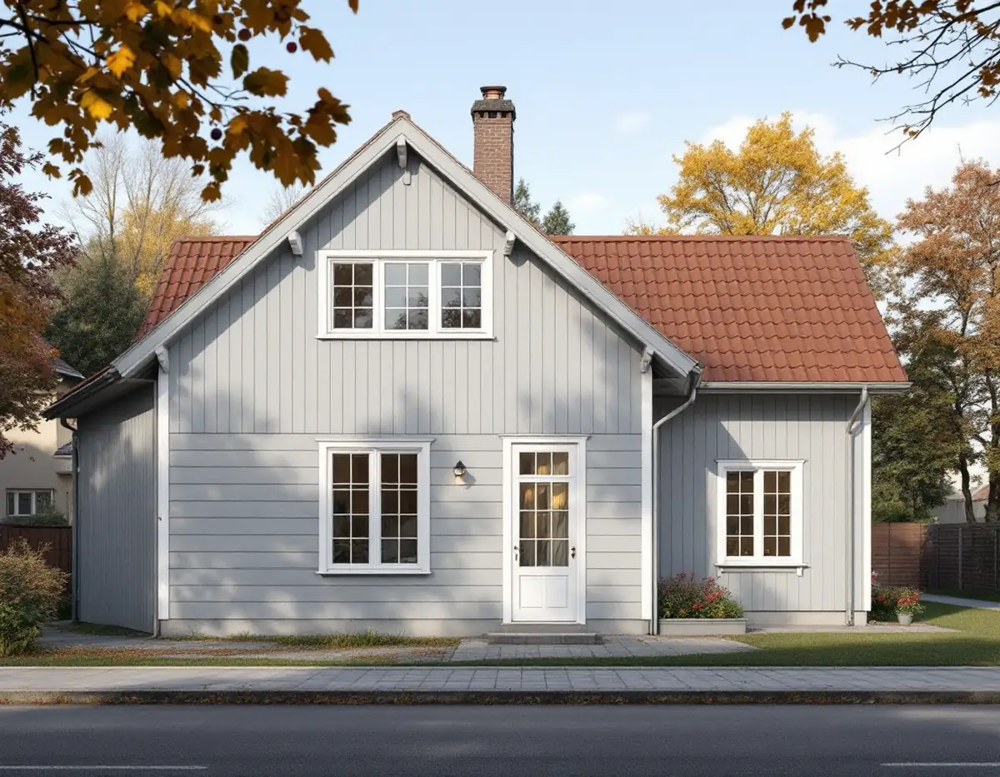
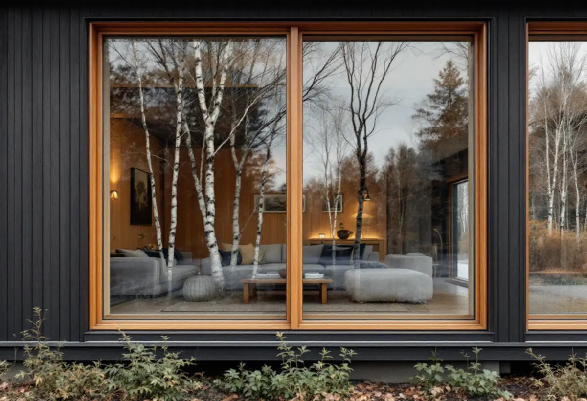

Besök
Vi går igenom fönstren, mäter upp dem och noterar mittposter, indelning och träslag.
Huddinges villor har fönster från helt olika tider: enkelt spröjsade fönster i egnahemsområdena, enhetliga fönsterrader i folkhemmets grupphus och påkostade fönster i teak på 1970-talets arkitektritade villor. Geal Entreprenad AB byter och renoverar fönster i hela Huddinge och börjar med ett gratis platsbesök och ett skriftligt kostnadsförslag.

Kommunens kulturmiljöprogram beskriver egnahemsområdena från 1910–1940-talen med villor i jugend, nationalromantik, klassicism och tidig funkis. Träpanel, enkelt spröjsade fönster och tegeltäckta sadel- eller brutna tak är de tongivande dragen. I sommarnöjena från 1880–1920-talen är villorna större, med glasverandor, snickarglädje och spröjsade fönster.
Folkhemsbygget från 1940–1960-talen gav små enhetliga villor, kedjehus och radhus i trä, puts eller fasadtegel. Programmet beskriver fönstersättningen i 1940-talets områden som enhetlig. På 1970-talet blev villorna större, och arkitektritade hus fick enligt programmet påkostade material som portar och fönster i teak och stora glasade partier.
Den spridningen gör att ett fönsterbyte i Huddinge sällan går att göra efter mall. Ett teakfönster från 1970-talet, en spröjsad båge från 1920-talet och ett fönster i en radhuslänga där alla grannar har likadana kräver olika lösningar.

I avsnittet om landsbygdens bebyggelse skriver programmet att fönster är byggnadernas ögon och har en starkt karaktärsbärande effekt på hur en byggnad uppfattas. I äldre byggnadstradition placeras fönstren symmetriskt och har kvadratiska eller stående rektangulära format, och mittposten är en viktig del av fönstrets uttryck.
Därför avråder vi från att ersätta ett tvåluftsfönster med en stor fast ruta på ett äldre hus, även när det är lovfritt. Ett nytt fönster kan ha samma mittpost och samma proportioner men moderna glas och tätningar. Boverket framhåller också att material, proportioner, indelning och profilering är det som ger ett fönster dess uttryck.
På 1970-talets villor är det i stället ofta de stora glaspartierna och träslaget som bär arkitekturen. Är teakkarmarna friska kan bågar och glas förbättras, och byts fönstren bör de nya ha liknande indelning och ett ytskikt som passar huset. Mer om ytskikt på trä finns under målare i Huddinge.
Huddinge kommun skriver att det inte krävs bygglov för att ändra utseendet på en- eller tvåbostadshus, om inte byggnaden eller området är kulturhistoriskt värdefullt. Att sätta in nya dörrar och fönster räknas som en fasadändring, och i värdefulla miljöer krävs därför bygglov. Kommunens webbkarta visar om en byggnad ligger inom ett kulturmiljöområde.
Krävs lov för ett nytt fönster behöver ansökan bara ha med en planritning, enligt kommunen. Är du osäker kan du söka bygglov frivilligt. Även en lovfri ändring ska vara anpassad till hur området ser ut, och påverkas byggnadens bärande delar väsentligt, till exempel när en ny öppning tas upp, krävs anmälan och startbesked.
I folkhemmets kedjehus och radhus är fönstersättningen en del av helheten i hela längan. Byts fönstren i ett hus åt gången är det klokt att välja samma indelning och kulör som grannarna har, så att raden fortsätter att hänga ihop. Det gör det också lättare för nästa granne som vill byta.
Boverket skriver att det är vanligt att gamla fönstertätningar släpper igenom vatten under fönstren, särskilt där fasaden utsätts för slagregn. Innan ett nytt fönster sätts in bör man därför undersöka om väggen har fuktskador och om fönstret behöver kompletteras med fuktskydd. Vi kontrollerar bröstningen under det gamla fönstret när det tas ut.
Fönster kan bytas året runt, men byts de på vintern råder Boverket att göra det stegvis, så att huset inte kyls ned. Planera också för inbrottsskyddet om ett fönsterhål behöver stå öppet en tid i väntan på det nya fönstret.
När fönstren är på plats behöver värmesystemet ofta justeras, eftersom huset tappar mindre värme. Har huset mekanisk ventilation ska även luftflödena justeras in. Ska fasaden runt fönstren också ses över, se fasadrenovering i Huddinge.
Vi går igenom fönstren, mäter upp dem och noterar mittposter, indelning och träslag.
Webbkartan och detaljplanen kontrolleras, och vi ser om någon öppning ändras.
Du får ett skriftligt kostnadsförslag med fönster, montage, bleck och ROT.
Bytet planeras rum för rum, så att huset hålls varmt och stängt.
Bröstningen kontrolleras, fönstret monteras och drevning och fuktskydd görs klart.
Foder och bleck kommer på plats och vi går igenom resultatet med dig.
Skatteverket räknar det som rotarbete i ett småhus att reparera eller byta ut fönster, montera isolerglas och bullerglas, byta fönsterbleck och montera ställning i samband med arbetet. Avdraget är 30 procent av arbetskostnaden, högst 50 000 kr per person och år och 75 000 kr tillsammans med rutavdrag.
Fönstren i sig räknas som material och ger inget avdrag. Geal gör avdraget direkt på fakturan.
Antalet fönster, deras storlek och träslag, om mittposter och spröjs ska tillverkas efter förlaga, om bröstningen under fönstren behöver lagas, om foder och bleck görs om och om arbetet kräver ställning. Efter ett kostnadsfritt platsbesök får du ett skriftligt kostnadsförslag.
Byta eller renovera fönster.
Fönsterbyte i Stockholm →Takbyte, takbesiktning och plåtarbeten.
Takläggare i Huddinge →Stuvsta, Snättringe och Skogås.
Takrenovering i Huddinge →Avlopp, egen brunn och ritningar.
Attefallshus i Huddinge →Grannar, tomtgräns och lovärendet.
Byggföretag i Huddinge →Nytt trä i en gammal fasad.
Fasadmålning i Huddinge →Egnahem, grupphus och permanentade stugor.
Badrumsrenovering i Huddinge →Villor, grupphus och fritidshus i Huddinge.
Fasadrenovering i Huddinge →Okopplade bågar, tätning och lagning av bottenstycken.
Fönsterrenovering i Huddinge →Grupphus, radhus och kedjehus i Huddinge.
Golvläggare i Huddinge →Slipa golvet och byt ytbehandling.
Golvslipning i Huddinge →Grupphus, egnahem och stugor.
Köksrenovering i Huddinge →Fasad, fönster och rum i Huddinge.
Målare i Huddinge →Rännor, dagvatten och brutna tak.
Plåtslagare i Huddinge →Altaner, förråd och gäststugor.
Snickare i Huddinge →Tyngre tak, stugor och landsbygd.
Takbyte i Huddinge →Ny tapet på lagad spännpapp.
Tapetsering i Huddinge →Råd för tre epoker av småhus.
Tillbyggnad i Huddinge →Rekordårens hus inifrån och ut.
Totalrenovering i Huddinge →